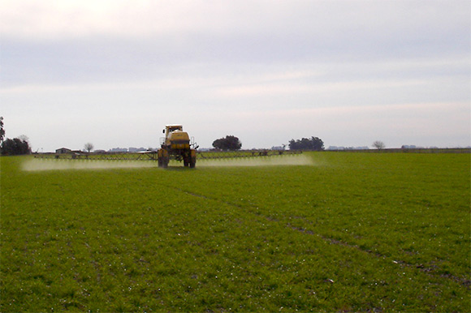
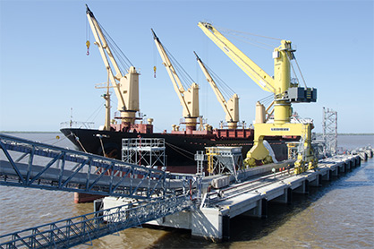
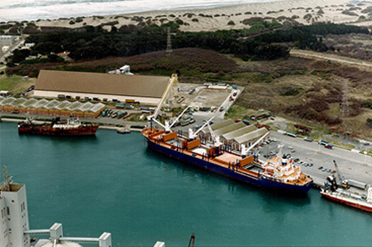

#Fitosanitarios
Brindamos productos y soluciones que ayudan a nuestros clientes a producir de la forma más eficiente, cuidando los recursos naturales y a las personas.
Llegamos a nuestros clientes a través de una amplia cadena de distribución. Además, les brindamos asesoramiento técnico y las mejores condiciones comerciales a los agricultores y ganaderos.
Brindamos asesoramiento técnico y las mejores condiciones comerciales a los agricultores y ganaderos.
Conocé nuestra completa línea Zamba de productos herbicidas, insecticidas y fungicidas en:
http://www.valorzamba.com.ar/
YouTube:
https://www.youtube.com/c/agriculturaconsciente
Conocé más sobre nuestro portafolio de productos en http://www.cofcofertilizantes.com.ar
Facebook:
https://www.facebook.com/AgriculturaConsciente
YouTube:
https://www.youtube.com/c/agriculturaconsciente
Almacenamiento y despacho
En respuesta a las necesidades de nuestros clientes, invertimos continuamente en soluciones de tecnología y logística.
Contamos con tres puertos con almacenamiento propio en Puerto General San Martín, Timbués y en Puerto Quequén; y dos modernas terminales con alta capacidad de despacho: Terfe Río Paraná y Terfe Necochea.

Contacto Comercial:
Oficina Buenos Aires:
Teléfono: +5411 4468 8000
Mail: nutrientes@cofcofertilizantes.com